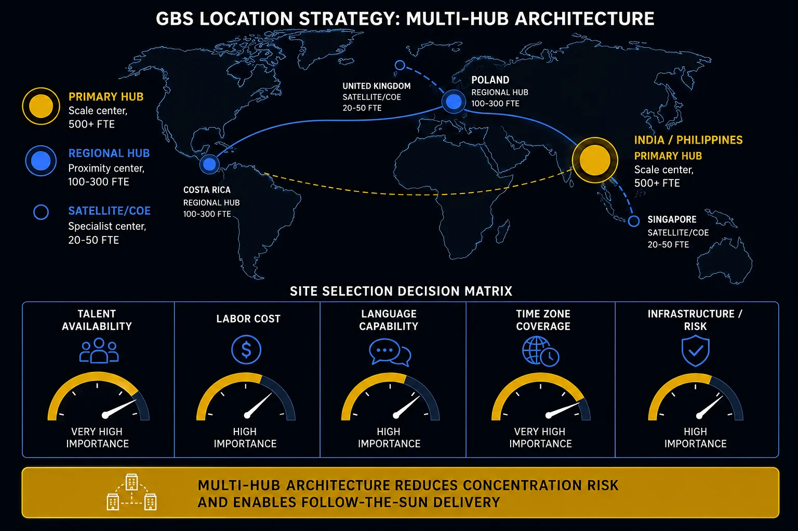

Location Strategy and Hub Design Where GBS centers are built — and why it shapes your career.
The location of your GBS center was not chosen at random. It reflects a weighted analysis of cost, talent, language, risk, and organizational history. Understanding that decision tells you why your role exists, what your organization values, and where your ceiling is.
How the location decision actually gets made
The formal process is structured and analytical. The actual decision is also shaped by leadership preferences, existing footprint, and organizational politics. Both parts matter.
- Project team assembled: typically cross-functional — Finance, HR, Real Estate, Legal, and often an external advisory firm with location data (Deloitte, KPMG, Hackett Group, site selection specialists)
- Criteria defined and weighted: the team identifies which factors matter to the organization, assigns relative weights, and builds a scoring framework — labor cost, talent quality, language coverage, risk profile, existing entity presence, and more
- Data collected per candidate location: labor market surveys, cost modeling, regulatory analysis, real estate availability, infrastructure assessment
- Business case built: the recommendation is supported by a financial business case — payback period, TCO over 5–10 years, sensitivity analysis on key assumptions
- Sponsor decision: the ultimate decision sits with the executive sponsor(s) — CFO, COO, or CEO depending on organizational structure and mandate
Rigorous analysis and aligned decision-making produce decisions that hold over time.
- Leadership preferences sometimes override the proposed location. Most locations can be justified — but an unaligned decision creates political debt that surfaces later as stakeholder resistance.
- The quality of the alignment process matters as much as the quality of the analysis.
- If all relevant stakeholders had access to the same data and the decision was transparent, disagreement about outcome is survivable. Surprise is not.

GBS multi-hub architecture with site selection decision criteria
Location criteria — what gets weighted and what gets underweighted
The standard criteria are well-known. What separates good location decisions from regrettable ones is typically how honestly the risk and trend factors are assessed — not whether cost was on the list.
Framework draws on: BCI Global site selection framework; Chief Executive — GBS Location Strategy; Deloitte GBS Location Strategy.
Site selection decision matrix — five weighted criteria
Nearshore vs. offshore — when each model wins
Cost is not the only variable. The right choice depends on what kind of work the center will do, how much interaction it requires, and how much change management the organization can absorb.
Proximity, language, and cultural alignment
Nearshore centers are often an extension of existing operations — the culture, systems, and people are already partially familiar. Change management is shorter. Attrition from time zone friction is lower.
- Same or adjacent time zone — collaboration is straightforward
- Cultural proximity reduces miscommunication risk — directness and communication norms are closer to the parent organization
- Language coverage — European languages, regional languages not available in offshore English-dominant centers
- Higher suitability for complex, judgment-intensive, or interaction-heavy processes
- Change management load significantly lower — known culture, known HR framework in many cases
- Often existing entity — faster setup, lower upfront investment
- Higher labor cost than offshore — but narrowing gap in some markets
Scale and cost at volume
Offshore centers deliver maximum labor cost arbitrage. They require significant change management investment upfront and ongoing management of cultural and time zone dynamics.
- Lowest labor cost — the primary economic argument
- Large, established talent pools in Tier 1 cities (Bangalore, Manila, Warsaw are now mid-cost; secondary cities retain cost advantage)
- 24/7 follow-the-sun coverage possible with multi-location design
- Best suited for standardized, high-volume, English-language processes with low interaction requirements
- Cultural differences require explicit management — indirect communication styles require specific onboarding and management frameworks
- Night shift attrition is a structural challenge over time — willingness degrades, cost of churn reduces cost advantage
- Change management investment is substantial — plan for 12–18 months of stabilization
- Cultural communication differences are an operational risk, not a cultural observation. In many Asian and Indian work cultures, indirect communication and reluctance to deliver unwelcome news create real operational problems in GBS environments:
- Issues go unreported.
- SLA misses are absorbed rather than escalated.
- Problems surface later than they should.
- Night shift attrition is a slow leak, not a sudden break. Teams willing to work night shifts to support European headquarters in year one become teams with high turnover in year three. The cost model built on year-one attrition rates does not hold. Factor this into the business case honestly.
- Nearshore is not just a cost compromise. For organizations requiring process intimacy, language diversity, or high interaction, nearshore is the structurally correct answer — not a more expensive fallback from a failed offshore attempt.
Hub design — what happens after the location is chosen
Choosing a location is the first structural decision. How the network is designed — single hub, hub-and-spoke, or distributed — determines how the GBS actually operates at scale.
- All scope in one location
- Simplest to manage — one HR framework, one culture, one leadership team
- Easiest cross-training and workforce flexibility
- Single point of failure risk — BCP exposure
- Works best for organizations with clear, standardized scope and limited language requirements
- Rare at large scale — most mature GBS evolve beyond this
- Primary hub handles volume, standardized scope, back-office processing
- Satellite locations handle language coverage, proximity needs, or specialist scope
- Nearshore hub + offshore hub is a common configuration — complexity and interaction onshore/nearshore, volume offshore
- BCP/DRP benefit — failure of one location does not take down the entire operation
- Requires coordination overhead between locations
- Industry-standard model for mature multi-region GBS
- Multiple locations, often not by design — accumulated through acquisitions, mergers, or fragmented historical initiatives
- Different locations may run different ERP systems, apply different HR frameworks, and have different cultures
- Cross-training across locations is limited by system complexity
- BU-specific CoEs or labor arbitrage initiatives sitting alongside or inside the GBS footprint
- Consolidation is a common strategic priority — but politically complex to execute
- The most common real-world situation — not a strategy, a patchwork
- Single-location risk is a governance gap: a center that cannot continue operating if the primary location is disrupted — by flood, power failure, political instability, or pandemic — is not resilient. Multi-location design is the primary structural mitigation.
- Hub-and-spoke provides natural redundancy: volume processes running at an offshore hub can be covered from a nearshore hub during disruption, and vice versa — if the scope and training allow it
- Shadow processing and cross-training are the operational levers: BCP is only as good as the team's ability to execute it under pressure. This requires active cross-training across locations, not just a document
- Regulatory requirements are evolving: financial services, healthcare, and other regulated industries face increasing expectations around operational resilience and geographic diversification of critical processes
Multi-hub architecture — primary, regional, and satellite centers
The legacy reality most GBS professionals actually inherit
Clean organizational design and strategic hub architecture exist in advisory presentations. The reality most GBS professionals walk into looks different.
- Acquired entities with their own systems: mergers and acquisitions leave fragmented ERP landscapes — SAP in one entity, Oracle in another, Workday in a third. Associates cannot be easily cross-trained across systems, and consolidation is expensive and politically difficult
- BU-sponsored parallel initiatives: individual business units or functions that started their own shared services or CoEs before the enterprise-wide GBS strategy existed. These sit alongside or partially overlap the GBS — creating dual accountability, duplication, and unclear governance
- Labor arbitrage point solutions: a center in a low-cost location that was set up for one function by one sponsor, with no connection to the broader GBS strategy. The intention was cost reduction, not transformation
- Process scope split across locations by legacy, not design: AP in Poland, AR in India, R2R split across both — not because the design called for it, but because that is how it accumulated over time
- No clean ERP foundation: the absence of a standardized, well-implemented ERP is the single biggest structural barrier to GBS effectiveness. You cannot leverage centralization, analytics, or automation at scale on a fragmented system landscape
Many GBS professionals spend significant effort managing the consequences of historical decisions they had no part in making.
- The patchwork is not a failure of the current team — it is the legacy of organizations that grew faster than their operational architecture.
- Understanding this context prevents frustration and enables more effective navigation.
- The strategic direction is consolidation and standardization. The practical work is managing operations while that consolidation happens incrementally.
What location strategy means for your career
Your location was chosen for specific reasons. Understanding those reasons tells you what your organization values about your center — and what that means for your growth.
- If you are in a primary cost-arbitrage location: your center was chosen for labor cost. That creates real operational value — and also creates a ceiling risk if the center does not evolve toward complexity and strategic contribution. The centers that get scope upgrades and more senior roles are those that demonstrate capability beyond transaction processing.
- If you are in a nearshore location: your center was likely chosen for language coverage, process proximity, or cultural alignment. The expectation is higher-complexity work and more interaction with the business. Your language and stakeholder management skills are genuinely strategic assets — use them visibly.
- If you are in a hub-and-spoke model: understand which hub you are in and what role it plays. Volume hub versus complexity hub determines what career paths are structurally available to you locally — and which moves require relocation.
- If your center has a fragmented legacy footprint: consolidation and standardization are the likely strategic direction. People who can operate across systems, understand the business case for consolidation, and manage through change will be disproportionately valuable during that transition.
- Your location ceiling is not fixed: centers that started as cost-arbitrage operations and evolved toward strategic contribution exist. The shift requires deliberate investment from leadership — and individuals who push that agenda internally accelerate it. Understanding location strategy gives you the language to do that.
Key terms in this cluster
Underlined terms throughout this page link here. Full cross-pillar glossary at the GBS Insider Club Field Guide glossary.
- Auxis — 10 Shared Services Trends Shaping the GBS Industry in 2026
- Auxis — 10 Shared Services Trends Shaping the GBS Industry in 2025
- BCI Global — Site Selection for Headquarters & Support Centers
- Chief Executive — Impacts of the Shifting GBS Landscape on Location Strategy Decisions
- Deloitte — Shared Services and GBS Location Strategy
- Quintop — Selecting the Right GBS Location: Nearshore or Offshore
- ANSR — Designing an Effective Dual-shore Delivery Model
- Tholons — 2025 Top 10 GCC/GBS Trends Report, cited in Auxis 2026 GBS Trends
- SSON/Auxis — State of GBS & Outsourcing in Latin America (2024)
- IMS GBS — The Smarter Ways to Evolve Shared Service Centers in 2026
You have covered all six clusters of Pillar 1 — GBS Fundamentals. This is the operating and structural foundation for everything in the GBS Insider Club curriculum.
- ✓ C1 — GBS Operating Models
- ✓ C2 — Value Creation and Commercial Logic
- ✓ C3 — Organizational Structure and Governance
- ✓ C4 — Contracts and Service Agreements
- ✓ C5 — Performance Measurement
- ✓ C6 — Location Strategy and Hub Design — this page
Want the full breakdown on video?
GBS location strategy and hub design covered in depth on the GBS Insider Club YouTube channel — with real examples, frameworks, and career implications.
▶ Subscribe on YouTubeKnowing the frameworks is the entry ticket. Applying them — visibly, at your actual job — is what gets you promoted.
The GBS Insider Club Career Paths turn this theory into a guided 90-day program for your role: self-assessment, practical exercises, templates, and Julian's unfiltered practitioner playbook.
Explore the Career Paths → Back to GBS Fundamentals